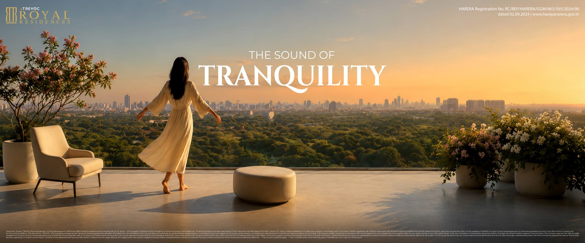
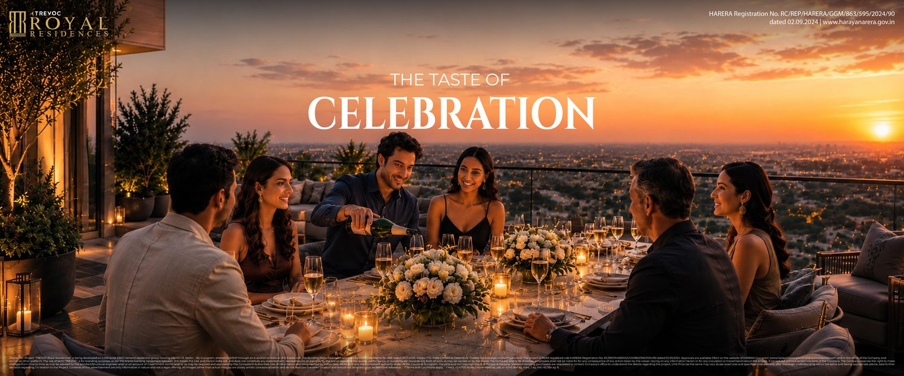
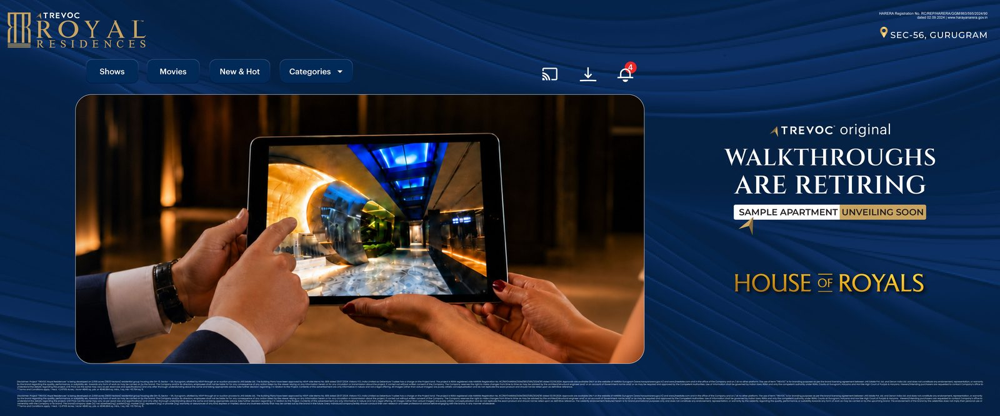
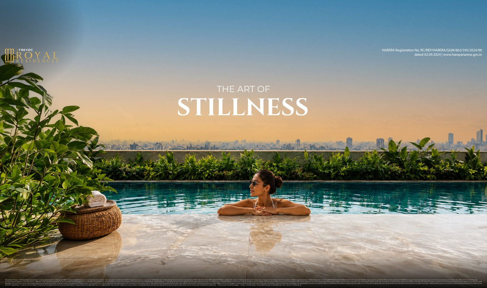

OTT/streaming title-card aesthetics drove the "Brochures Are Retiring" teaser series. Celebrity-endorsement print campaigns set the tone for the ambassador work. Luxury real estate grid design (Sotheby's-tier developer marketing) provided the restraint and material confidence the SVS grids needed to hold up at scale.





